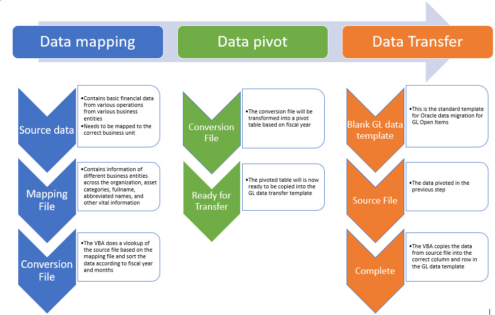

VBA Automated Data Manipulation
Category: Data Manipulation; VBA; Data Engineering; Automation; Excel

Business Case
A private healthcare provider in Klang Valley has decided to adopt Oracle as its ERP solution.The existing data in the legacy system, however, required a massive overhaul and cleansing before the data could be migrated into Oracle.I was approached by the Financial Controller of the organization to devise a simple VBA data-cleansing tool to facilitate their Trial Balancing.
Process Flow
The entire script is divided into three major parts: 1. Data mapping; 2. Data pivot; and 3. Data transfer. There is a VBA button that runs each script so it will be easy for business user to follow.
Outcome
Due to the nature of the business, the Financial Controller had to manually process the GL file from each entity every month; with each file taking up to two or three hours of processing time.In addition, she had to maintain the mapping file to ensure that the entities' information are up to date. With this automated solution, the business has been able to reduce the processing time for each file from three hours down to two minutes. Moreover, the business was elated that the automated calculation could perform consistently and provided a much more accurate calculation than manual processing-there were instances where the automated calculations corrected manually calculated errors.